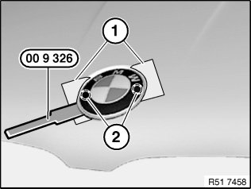
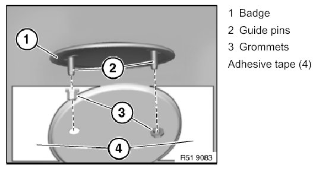

51 14 000 Removing and Installing/Replacing Front BMW Badge
51 14 000 Removing and installing/replacing front BMW badge
Special tools required:
IMPORTANT: Risk of damage.

To avoid damaging the paintwork on the engine hood/bonnet, tape off edge areas (1) to sides of guide pins.
So as not to subject the BMW badge to excessive deformation, lever out the badge with special tool 00 9 325 at guide pins (2).
Installation:
The following parts must not be damaged or missing, replace if necessary:
